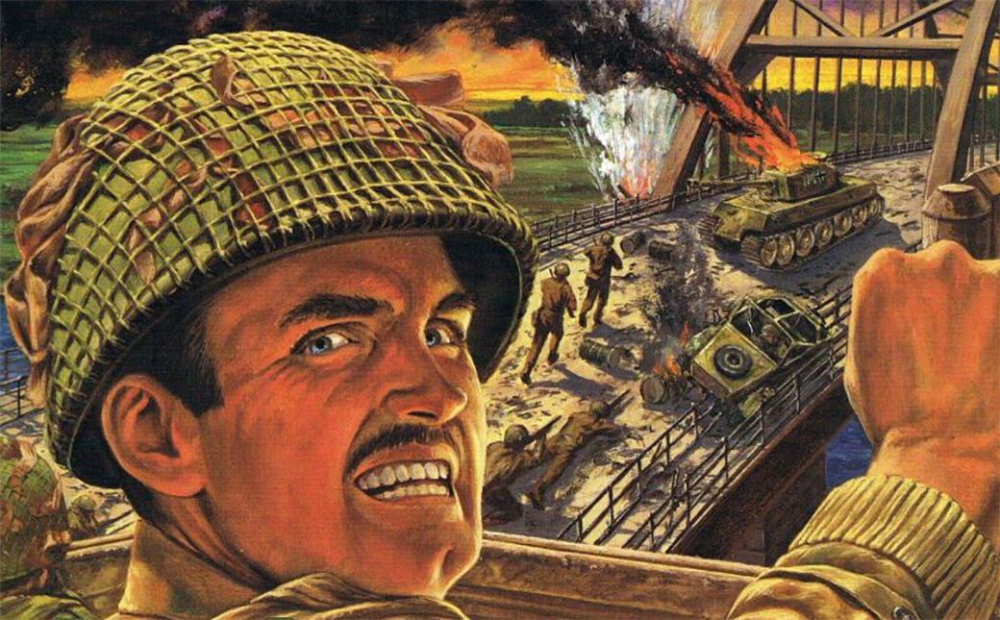

Retrospectiva săptămânii 25 noiembrie - 1 decembrie 2018
Retrospectiva săptămânii este rubrica duminicală în care trecem în revistă evenimentele săptămânii de pe frontul de gaming: știri şi articole (scrise de alții, bineînțeles, că e mai ușor aşa), industrie, lansări, oferte de jocuri, toate numai de savurat la cafeaua de duminică dimineața. (Și la care oricine poate contribui. 1)
Știri
- Loot boxes in da news din nou:
- Au intrat în vizorul agenției federale FTC din SUA, care anunță că vor deschide o investigație și vor prezenta un raport Congresului american. (GamesIndustry.biz, Variety, Polygon, RPS)
- De asemenea, o comisie a Parlamentului Australiei a publicat un raport conform căruia subiectul loot boxes este unul care merită investigat mai în amănunt de alte agenții ale guvernului. (PC Gamer, Variety)
- Iar asociația IGDA face un apel la dezvoltatori să adopte o abordare unitară și responsabilă în ceea ce privește lootboxes. (Variety, Gamasutra, GameDaily.biz, TechRaptor)
- Studioul Starbreeze este presat să reducă costurile, după vânzările slabe de care a avut parte Overkill’s The Walking Dead (GamesIndustry.biz, Variety, PCGamesN) și a lansat și o versiune „Starter Edition”, mai ieftină. (PCGamesN)
- Rockstar renunță definitiv la dezvoltarea lui Agent 9, un proiect anunțat acum 9 ani. (VentureBeat, Hardcore Gamer, Wccf tech)
- Bethesda ar putea fi dați în judecată pentru că refuză să acorde refunds pentru Fallout 76. (Eurogamer, USgamer, Variety, Shacknews, Motherboard)
- Problemele nu se opresc aici pentru Bethesda, care au fost criticați și din cauza și din cauza ediției de colecție a Fallout 76 - cumpărătorii s-au trezit că obiectele pe care le-au primit, mai precis geanta în care se ține casca, nu corespund imaginilor publicitare. Iar colac peste pupăză, compensarea oferită de Bethesda e de aprox. 5 dolari în moneda virtuală din joc, asta în timp ce prețul ediției de colecție este de 200 de dolari (și s-a mai aflat ulterior și că Bethesda a oferit niște genți similare gratuit în cadrul unui eveniment pentru streameri). (USgamer, VG247, Eurogamer)
- Un grup de peste 1300 de persoane (printre care Peter Molyneux sau Charles Cecil), reprezentând 125 de companii din industria jocurilor din Marea Britanie, au trimis Parlamentului Britanic o scrisoare deschisă care avertizează asupra consecințelor negative pe care le-ar aduce acordul privind Brexitul. (Games4EU, GamesIndustry.biz, PCGamesInsider.biz, Variety, PCGamesInsider.biz)
- Fortnite a ajuns la peste 200 de milioane de jucători înregistrați. (PC Gamer, PCGamesInsider.biz)
- Nintendo renunță la controversatul Creators Program, dedicat celor care vor să creeze conținut cu material video din jocurile lor, în favoarea unui set de reguli mai puțin restrictive. (Kotaku, Polygon, Ars Technica)
- Valeroa, un nou produs DRM, își face debutul în jocul City Patrol: Police. Compania care produce sistemul de protecție susține că acesta nu afectează performanța și că scopul principal e să protejeze jocul în perioada de lansare. Ei susțin că „protecția devine mult mai ușor de ocolit după o perioadă predefinită” și că nu au o problemă dacă „grupurile de pirați sau alte persoane sparg Valeroa odată ce protecția e slăbită”. (DSOGaming )
- Al Lowe își vinde jocurile pe eBay, inclusiv codul sursă al acestora, începând cu Leisure Suit Larry 1 și 2. (Ars Technica, Gamasutra, PC Gamer)
- Valve schimbă contractul de distribuție pe care trebuie să-l încheie cei care își vând jocurile pe Steam. Astfel, plecând de la procentul fix de 30% din prezent, Valve introduce câteva praguri de vânzări pentru fiecare joc, care vor determina scăderea acestui procent la 25%, pentru vânzări de 10 milioane de dolari, respectiv 20% la pragul de 50 de milioane. (Steam Community, Gamasutra, Games Informer, GamesIndustry.biz)
Articole (critică, dev, design)
- The Small, Weird, Wonderful World of Indie Game Collective Sokpop (Paste)
- Is it worth it? The death of ethical business models in games. (Medium)
- The Unrealistic Challenge of Realism in Video Games (Gamasutra)
- That’s Not My Arthur Morgan (Kotaku)
- Unexpected ways time affects game development (PC Gamer)
- Pivot (Unwinnable)
- The rise of esports as a spectator phenomenon (VentureBeat)
- Adapting the mechanics of tabletop RPGs (Wireframe magazine)
- We’re Not Fans Anymore, Not Really (Hardcore Gamer)
Actualitate
The Game Awards:
Loot boxes:
- Why Microtransaction and Loot Boxes Are Destroying Games (Variety)
- FTC loot box investigation: What happens next? (Polygon)
- ESA defend loot boxes again, while IGDA call for industry self-regulation (RPS)
Artifact:
- Valve’s New Game 'Artifact' Is a Perfect Machine for Making Money (Motherboard)
- Card game players and PC gamers may never agree on Artifact’s pricing (PC Gamer)
- Artifact’s monetisation might be stingy, but you were never promised anything else (PCGamesN)
Not-a-review
- It turns out FIFA is ideal for teaching mental health patients about resilience (Eurogamer)
- Assassin’s Creed Odyssey Really Blew Its Ending (Kotaku)
- Nidhogg 2 teaches the concepts that underpin fighting games (RPS)
- A day trip to Yakuza 6’s Onomichi (Eurogamer)
- (Spoilers) Return of the Obra Dinn’s Critique of Capitalism (SlowRun)
Industrie
- The game store that outshines Steam by staying small and weird (The Verge)
- Beware the corporate video game canon (A.V. Club)
- Opinion: ‘Winter is coming’ for the video game biz (Gamasutra)
- Atari CEO interview — How Rollercoaster Tycoon revival saved the company (VentureBeat)
- The PC Revolution: Streaming and subscription services are going to change the industry forever (PCGamesInsider.biz)
- How to update the classics for modern audiences with Dotemu (Destructoid)
- National Videogame Museum: Bringing the past, present, and future of games to the wider public (GamesIndustry.biz)
- The future of 2D gaming (GamesIndustry.biz)
- VR Is Alive And Well, Just Not Where You’re Looking (GameDaily.biz)
Istorie, retrospectivă
- Ascendant: The Fall of Tomb Raider and the Rise of Lara Croft (Shacknews)
- Controlling the Spice, Part 2: Cryo’s Dune The Digital Antiquarian (primul articol din serie vorbește despre filmele Dune) (The Digital Antiquarian)
- ‘Spacewar!’: Birth of the Game Industry (Variety)
- The legacy of PlayStation creator Ken Kutaragi, in 24 stories (Polygon)
- How Ultima 4 and Wasteland Ushered in a New Era of Maturity for RPGs (USgamer)
- An ode to the cyberpunk David Bowie of Omikron: The Nomad Soul (RPS)
- Sega Dreamcast at 20: the futuristic games console that came too soon (The Guardian)
- The Enduring Legacy of ‘Half-Life,’ 20 Years After Its Release (The Ringer)
- Thief: The Dark Project a împlinit 20 de ani pe 30 noiembrie:
- 20 years ago, Thief: The Dark Project defined the stealth game (PC Gamer)
- Hold it right there, you taffer – Thief is 20 years old today! (RPS)
- Thief: The Dark Project is 20 years old, and that makes me feel the following emotions (RPS)
- Dark Narrative: Why I Like Thief - A 20th Anniversary Personal Reflection (TechRaptor)
- Thief: The Dark Project – 20th Anniversary Oral History (The History of How We Play)
- A Stairway To The Unconscious — Thief: The Dark Project, 20 Years Later (Medium)
- 20 Years in Darkness — after two decades, Thief: The Dark Project is still the best (Medium)
Dev, making of
- Judging Judgment: Analyzing Early Access Finances of Our First Indie Game (Gamasutra)
- For Lucas Pope, Return of the Obra Dinn was a bunch of appealing design problems (Gamasutra)
- Four design lessons which were really obvious to everyone but me (Gamasutra)
- (Video) Indie Dev Releases Game After Documenting Its Development Every Week For Three Years (Kotaku)
- (Video) Philippe Dao: Asmodee and the Best of Digital Board Games (Gamesauce)
- (Video) Video: How being a Dungeon Master inspired The Bard’s Tale (Gamasutra)
Design, world-building
- (Video) Video: Building an environment to tell a story in Dear Esther (Gamasutra)
- (Poze frumoase) Sun's Out, Guns Out (Kotaku)
Made în România
- Vice România publică un reportaj despre istoria Level în România și stă de vorbă cu doi dintre foștii redactori, Marius Ghinea și cioLAN. (Vice România)
- Este anunțat jocul Supersolar al studiului românesc BABADOKIA, un ARPG cu tematică space sci-fi. (Steam)
- Sergiu Crăițoiu, unul dintre developerii de la studiul Alien Pixel, dă un interviu pentru site-ul Cliquist despre Unbound: Worlds Apart. (Cliquist)
- S-a încheiat prima ediție a competiției Edu Minecraft, în cadrul căreia elevi de la aproape 90 de școli și licee din România au participat la un concurs de Minecraft, ce a presupus recreerea cetății Alba Carolina din Alba Iulia. Câștigătorii vor fi anunțați pe 14 decembrie. (Economica.net, MOBzine.ro)
- Săptămâna viitoare, în perioada 4 – 9 decembrie, se va desfășura Bucharest Gaming Week, ce include mai multe evenimente dedicate jocurilor organizate în tot Bucureștiul, printre care se numără o expoziție de artiștilor români care lucrează în industrie, o petrecere cu muzică din jocuri, etc, și se va încheia la Romexpo pe 8-9 noiembrie. (go4games.ro, Site oficial Bucharest Gaming Week, Facebook Bucharest Gaming Week)
- (Video) Un scurt filmuleț ce prezintă câteva dintre jocurile românești promițătoare care au apărut sau urmează să apară. (Cavaleria.ro)
Anunţuri şi lansări de jocuri
- Obsidian va dezvălui un nou joc săptămâna viitoare, la The Game Awards. (Variety)
Anunţate
- Prodeus, un FPS old-school, cu tot cu grafica retro (DSOGaming )
- Supersolar (Steam)
- Warhammer Quest 2 (Eurogamer)
- Gods Remastered (RPS)
- Wasteland 1 primește o versiune remasterizată (PC Gamer, Shacknews)
- Clatter (Eurogamer)
- Batalj (Gamereactor)
- Dawnthorn (DSOGaming )
- Hell Let Loose, un FPS multiplayer plasat în WW2 a fost reanunțat, după o campanie Kickstarter lansată anul trecut (PC Gamer)
Acum cu dată de lansare
- Mage’s Initiation: 30 ianuarie 2019 (RPG Codex)
- Breach ianuarie 2019 (PC Gamer)
- Civilization VI: Gathering Storm: 14 februarie 2019 (PCGamesN)
- We. The Revolution: 21 martie 2019 (Eurogamer)
Lansate
- 26 noiembrie: Zquirrels Jump (proiect românesc) (Steam) *(Steam)
- 27 noiembrie: Darksiders 3 (Steam, gog.com)
- 27 noiembrie: Loria (Steam, Hardcore Gamer)
- 29 noiembrie: Artifact (Steam)
- 29 noiembrie: Rapture Rejects (Steam)
- 29 noiembrie: Parkitect (Steam, gog.com)
- 30 noiembrie: Red Dead Online (beta) (Rockstar)
- 30 noiembrie: X4: Foundations (Steam, gog.com)
- 30 noiembrie: RIDE 3 (Steam)
- 30 noiembrie: FIGHTING EX LAYER (Steam)
- 30 noiembrie: Simmiland (Steam)
Prăvălii de jocuri
Jocuri noi în catalog
- December’s Xbox Games with Gold lineup includes original Xbox title Mercenaries (Eurogamer)
- Onrush and Soma are the PS Plus highlights for December (Gamereactor)
- Star Wars: Battlefront 2 quietly joins EA Access (VG247)
Reduceri și promoții
- The Slitherine Holiday Sale has some stellar strategy discounts (PC Gamer)
- Tabletop Goes Digital In The Humble Board Games Bundle (TechRaptor)
- SOMA and Onrush are your PlayStation Plus games for December (PlayStation.Blog.Europe)
- PlayStation Store unveils festive game sale (Eurogamer)
- Weekend Console Download Deals for Nov. 30: Post-Black Friday PlayStation Flash Sale (Shacknews)
- Weekend PC Download Deals for Nov. 30: Steam loves trucks (Shacknews)
- GOG Weekend Sale Offers Big Savings for a Limited Time - Hardcore Gamer (Hardcore Gamer)
Recomandarea săptămânii: Close Combat II: A Bridge Too Far

Săptămâna aceasta, cu ocazia reducerii făcute de GOG la seria Close Combat, vă recomandăm un titlu Close Combat. Dacă nu ați jucat niciunul, puteți începe cu oricare, cum ar fi de exemplu Close Combat: Cross of Iron, care este o versiune modernizată a clasicului Close Combat III: The Russian Front.
Pentru această săptămână, însă, o să alegem însă titlul cu numărul 2 din serie, Close Combat II: A Bridge Too Far, recomandat și de unul din membrii forumului:
A fost primul meu joc din seria Close Combat. Cred că a venit sub formă de demo pe un CD Level. Demo-ul avea două sau trei hărți de toate, din care lipseau chestiile care făceau jocul cu adevărat special. În demo, era “a generic real-time strategy game with squad-based units”. Atipic, în condițiile în care RTS-urile vremii aveau unități individuale, nu grupe de unități, dar altfel… cam meh. Ca atare, am jucat hărțile din demo în draci doar ca să câștig.
1-2 ani și un cadou din Australia mai târziu, am obținut și jocul full. Supriză mare când, după ce am trecut prin primele hărți pe pilot automat, pentru că le cunoșteam pe de rost, am avut șocul vieții să descopăr că unitățile pierdute (fie squad-ul întreg, fie indivizii din squad) NU SE REGENEREAZĂ AUTOMAT. Și dacă am fost foarte generos cu pierderea de vieți la o hartă dintr-un teatru de operațiuni, revizitarea aceleiași hărți/aceluiași teatru de operațiuni mă aducea la aceleași unități cu care am încheiat misiunea precedentă - cu morți, cu răniți, cu lipsa de muniție etc. Mind boggling pentru mine, când te gândești că „standardul” perceput și impus de jocuri ca WarCraft II, Age of Empires sau Red Alert te făcea să nu dai două parale pe unități. În jocurile amintite, unitatea era 1 sau 0, vie sau moartă, utilizabilă sau nu; sigur, putea să aibă HP scăzut, dar nu parametri scăzuți (rate of fire, ammo, weapon type, morale etc.) astfel încât să se comporte sub nivelul optim.
‘Nuff said. Jocul este conceput pe baza Operațiunii Market Garden și, deși oferă posibilitatea de a juca atât cu Axa, cât și cu Aliații de la bun început, este asimetric din capul locului (again, not like other RTS-es of the time). Aliații vor să ocupe puncte strategice pe o hartă, Axa ar preferă să le păstreze. Aliații încep cu mai multe unități/resurse, Axa, cu mai puține. Aliații au elementul surpriză, Axa, nu. Aliații sunt presați de timp să ocupe cât mai repede punctele, Axa este interesată să tragă de timp cât mai mult. Pentru că Aliații au nevoie să avanseze convoiul de blindate pentru a “pune pe harta” unități mai avansate, Axa, nu. Și totul începe să semene cu House of Cards, unde o decizie neinspirată într-un anume punct are repercusiuni mai vaste decât ar da impresia la prima vedere.
Campania principala (toată Operațiunea Market Garden) este o chestie de câteva zeci de ore. Însă există și suboperațiuni (componente ale Market Garden), care permit un joc mai scurt ca timp, dar cu toate opțiunile specifice Close Combat II. Nu este un joc care să fi îmbătrânit frumos din punct de vedere grafic, însă elementele de gameplay din el sunt solide, logice și utilizate chiar și în prezent. Also, the movie rocks! (McWilliams)
Cititorii revistei Level știu probabil că aceste jocuri alcătuiesc una dintre seriile de suflet ale lui Marius Ghinea, astfel că, pentru lectură și recomandări suplimentare, îi puteți citi review-urile online:
- Close Combat III: The Russian Front
- Close Combat IV: Battle of the Bulge
- Close Combat V: Invasion Normandy
- Dacă ai citit vreun articol sau vreo știre interesantă, sau ai o recomandare de joc, și crezi că merită incluse în retrospectiva săptămânii, te așteptăm pe forum pe unul dintre topicurile dedicate: Știri, Articole, Gaming România, Recomandarea Săptămânii [return]